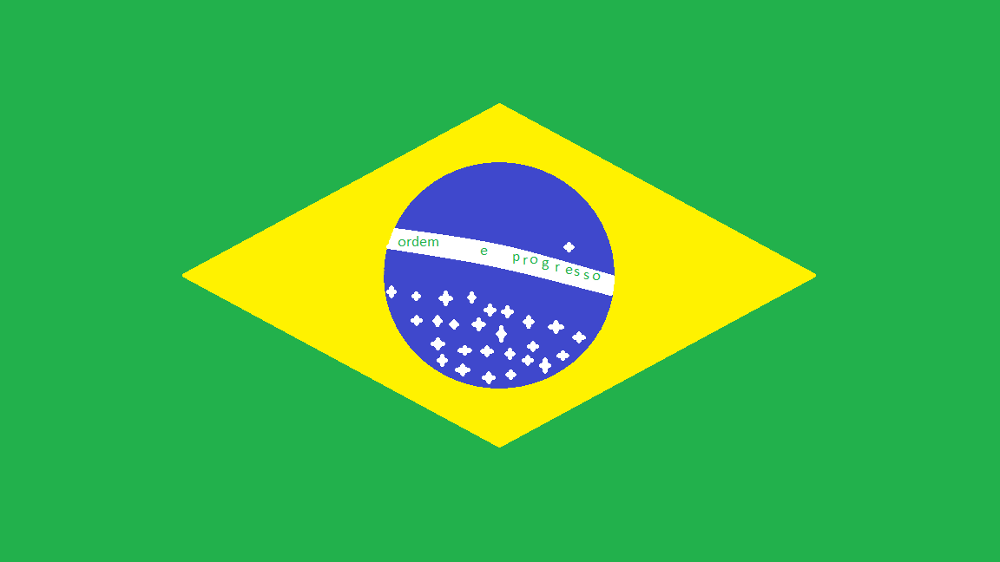
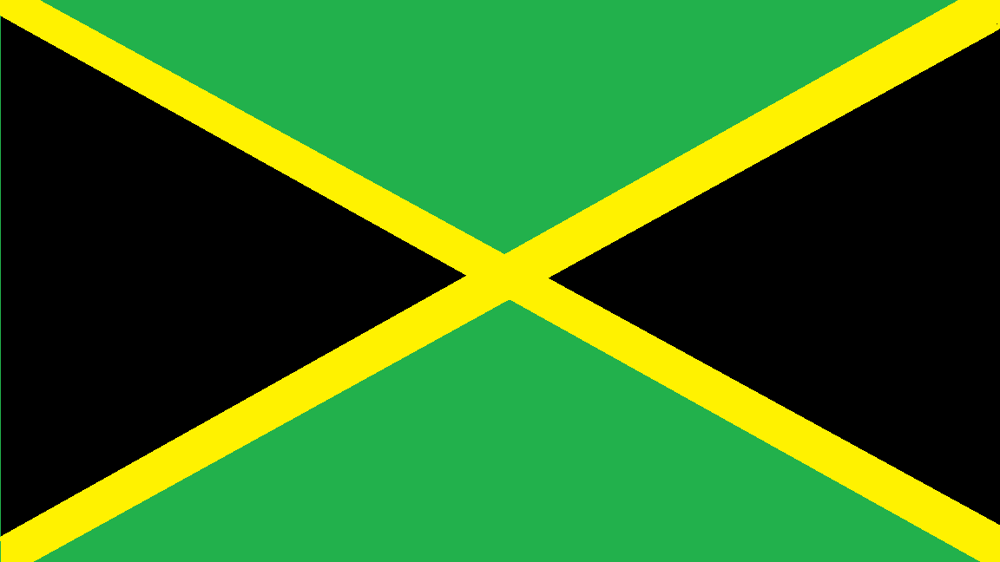

Neste site você verá um pouco de algumas países, não são fontes 100% confiáveis porque foram tiradas do primeiro resumo do google, porém ainda assim é melhor que nada
O Brasil é um vasto país sul-americano, é famoso pelas movimentadas praias de Copacabana e Ipanema, bem ocmo pelo imenso e animado carnaval, com desfiles de carros alegóricos, fantasias extravagantes e samba
O Japão tem cidades densas, palácios imperiais, parques nacionais montanhosos e milhares de santuários e templos. Tóquio, a capital, é conhecida por seus arranha-céus e lojas pela cultura pop
Jamaica é um país no Caribe que possui muitas florestas tropicais e praias com recife. A Jamaica é conhecida como o berço da musica reggae, e sua capital, Kingston, abriga um museu dedicado ao cantor Bob Marley
A Arábia Saudita é um país no deserto que abrange a maior parte da Península Arábica. Conhecida como o local de nascimento do islamismo